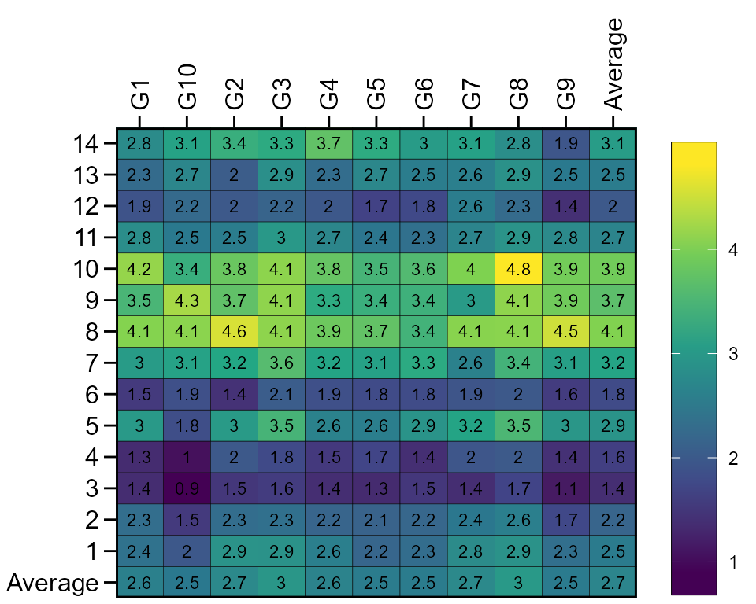
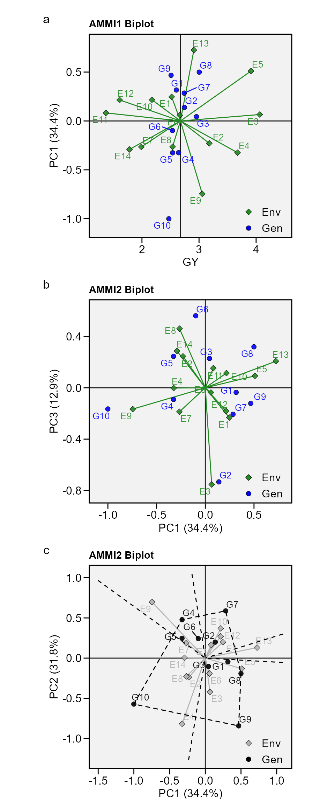
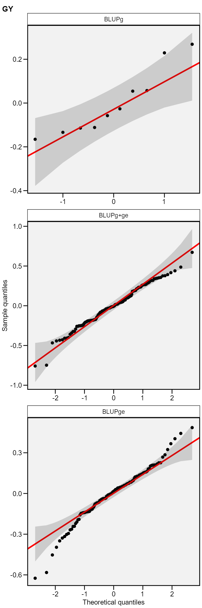
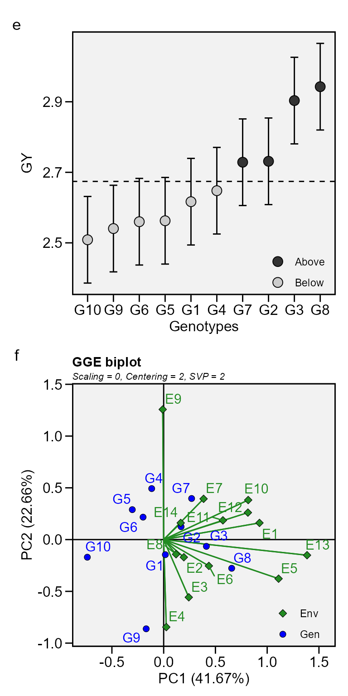

Multi-environment Trial Analysis
Tiago Olivoto
2020-09-12
Source:vignettes/metan_start.Rmd
metan_start.Rmdmetan provides tools for computing several world-known stability statistics. The following stability methods are implemented.
- Parametric methods
- AMMI analysis with
performs_ammi(). - GGE biplot analysis with
gge(). - BLUP prediction for multi-environment trials with
waasb(). - AMMI-based stability statistics with
AMMI_indexes(). - BLUP-based stability indexes with
Resende_indexes(). - Joint regression analysis (Eberhart and Russell 1966) using
ge_reg(). - Genotypic confidence index (Annicchiarico 1992) using
Annicchiarico(). - Modified genotypic confidence index (Schmildt et al. 2011) using
Schmildt(). - Ecovalence (Wricke 1965) using
ecovalence(). - Stability analysis and environmental stratification (Murakami and Cruz 2004) using
ge_factanal(). - Shukla’s stability variance (Shukla 1972) using
Shukla(). - Weighted Average of Absolute Scores (Olivoto, Lúcio, Da silva, Marchioro, et al. 2019) using
waas()(fixed-effect model) andwaasb()(mixed-effect model).
- AMMI analysis with
- Non-parametric methods
- Superiority index (Lin and Binns 1988), using the function
superiority(). - Fox’s stability statistic (Fox et al. 1990) with
Fox(). - Geometric adaptability index (Mohammadi and Amri 2008) with
gai(). - Huehn’s stability statistic (Huehn 1979) with
Huehn(). - Thennarasu’s stability statistics (Thennarasu 1995) with
Thennarasu().
- Superiority index (Lin and Binns 1988), using the function
The easiest way to compute the above-mentioned stability indexes is by using the function ge_stats(). This is a wrapper that basically returns a summary of each method. If you are looking for more details from each method like plot() and print(), I’d suggest computing the methods using their own function.
The complete functionality of the package is described at https://tiagoolivoto.github.io/metan/index.html. You’re welcome to check it out!
Brief examples
Brief examples will be shown using the dataset data_ge that contains data on two variables assessed in 10 genotypes growing in 14 environments.
Checking data
First of all, we will check the data for possible problems with the function inspect().
library(metan) inspect(data_ge) # # A tibble: 5 x 9 # Variable Class Missing Levels Valid_n Min Median Max Outlier # <chr> <chr> <chr> <chr> <int> <dbl> <dbl> <dbl> <dbl> # 1 ENV factor No 14 420 NA NA NA NA # 2 GEN factor No 10 420 NA NA NA NA # 3 REP factor No 3 420 NA NA NA NA # 4 GY numeric No - 420 0.67 2.61 5.09 0 # 5 HM numeric No - 420 38 48 58 0
Then, the details of the multi-environment trial can be obtained with the function ge_details(). Note that to apply the function to all numeric variables quickly, we can use the select helper everything() in the argument resp.
ge_details(data_ge, env = ENV, gen = GEN, resp = everything()) # # A tibble: 10 x 3 # Parameters GY HM # <chr> <chr> <chr> # 1 Mean "2.67" "48.09" # 2 SE "0.05" "0.21" # 3 SD "0.92" "4.37" # 4 CV "34.56" "9.09" # 5 Min "0.67 (G10 in E11)" "38 (G2 in E14)" # 6 Max "5.09 (G8 in E5)" "58 (G8 in E11)" # 7 MinENV "E11 (1.37)" "E14 (41.03)" # 8 MaxENV "E3 (4.06)" "E11 (54.2)" # 9 MinGEN "G10 (2.47) " "G2 (46.66) " # 10 MaxGEN "G8 (3) " "G5 (49.3) "
We can create a plot to show the performance of the genotypes across the environments with ge_plot().
ge_plot(data_ge, GEN, ENV, GY)

Or obtain the means for genotypes, environments or genotype-environment interaction with ge_means(). Note that the function round_cols() provided by metan round all numeric columns of a data frame to two (default) significant figures.
mge <- ge_means(data_ge, env = ENV, gen = GEN, resp = everything()) # Genotype-environment means get_model_data(mge) %>% round_cols() # Class of the model: ge_means # Variable extracted: ge_means # # A tibble: 140 x 4 # ENV GEN GY HM # <fct> <fct> <dbl> <dbl> # 1 E1 G1 2.37 46.5 # 2 E1 G10 1.97 46.9 # 3 E1 G2 2.9 45.3 # 4 E1 G3 2.89 45.9 # 5 E1 G4 2.59 48.3 # 6 E1 G5 2.19 49.9 # 7 E1 G6 2.3 48.2 # 8 E1 G7 2.77 47.4 # 9 E1 G8 2.9 48.0 # 10 E1 G9 2.33 47.7 # # ... with 130 more rows # Environment means get_model_data(mge, what = "env_means") %>% round_cols() # Class of the model: ge_means # Variable extracted: env_means # # A tibble: 14 x 3 # ENV GY HM # <fct> <dbl> <dbl> # 1 E1 2.52 47.4 # 2 E10 2.18 44.3 # 3 E11 1.37 54.2 # 4 E12 1.61 49.6 # 5 E13 2.91 46.6 # 6 E14 1.78 41.0 # 7 E2 3.18 44.1 # 8 E3 4.06 52.9 # 9 E4 3.68 50 # 10 E5 3.91 52.2 # 11 E6 2.66 45.9 # 12 E7 1.99 48.5 # 13 E8 2.54 45.2 # 14 E9 3.06 51.3 # Genotype means get_model_data(mge, what = "gen_means") %>% round_cols() # Class of the model: ge_means # Variable extracted: gen_means # # A tibble: 10 x 3 # GEN GY HM # <fct> <dbl> <dbl> # 1 G1 2.6 47.1 # 2 G10 2.47 48.5 # 3 G2 2.74 46.7 # 4 G3 2.96 47.6 # 5 G4 2.64 48.0 # 6 G5 2.54 49.3 # 7 G6 2.53 48.7 # 8 G7 2.74 48.0 # 9 G8 3 49.1 # 10 G9 2.51 47.9
AMMI model
Fitting the model
The AMMI model may be fitted with with both functions performs_ammi() and waas(), which is the acronym for the weighted average of absolute scores (Olivoto, Lúcio, Da silva, Marchioro, et al. 2019).
ammi_model <- performs_ammi(data_ge, ENV, GEN, REP, resp = c(GY, HM)) # variable GY # --------------------------------------------------------------------------- # AMMI analysis table # --------------------------------------------------------------------------- # Source Df Sum Sq Mean Sq F value Pr(>F) Proportion Accumulated # ENV 13 279.574 21.5057 62.33 0.00e+00 . . # REP(ENV) 28 9.662 0.3451 3.57 3.59e-08 . . # GEN 9 12.995 1.4439 14.93 2.19e-19 . . # GEN:ENV 117 31.220 0.2668 2.76 1.01e-11 . . # PC1 21 10.749 0.5119 5.29 0.00e+00 34.4 34.4 # PC2 19 9.924 0.5223 5.40 0.00e+00 31.8 66.2 # PC3 17 4.039 0.2376 2.46 1.40e-03 12.9 79.2 # PC4 15 3.074 0.2049 2.12 9.60e-03 9.8 89 # PC5 13 1.446 0.1113 1.15 3.18e-01 4.6 93.6 # PC6 11 0.932 0.0848 0.88 5.61e-01 3 96.6 # PC7 9 0.567 0.0630 0.65 7.53e-01 1.8 98.4 # PC8 7 0.362 0.0518 0.54 8.04e-01 1.2 99.6 # PC9 5 0.126 0.0252 0.26 9.34e-01 0.4 100 # Residuals 252 24.367 0.0967 NA NA . . # Total 536 389.036 0.7258 NA NA <NA> <NA> # --------------------------------------------------------------------------- # # variable HM # --------------------------------------------------------------------------- # AMMI analysis table # --------------------------------------------------------------------------- # Source Df Sum Sq Mean Sq F value Pr(>F) Proportion Accumulated # ENV 13 5710.32 439.255 57.22 1.11e-16 . . # REP(ENV) 28 214.93 7.676 2.70 2.20e-05 . . # GEN 9 269.81 29.979 10.56 7.41e-14 . . # GEN:ENV 117 1100.73 9.408 3.31 1.06e-15 . . # PC1 21 381.13 18.149 6.39 0.00e+00 34.6 34.6 # PC2 19 319.43 16.812 5.92 0.00e+00 29 63.6 # PC3 17 114.26 6.721 2.37 2.10e-03 10.4 74 # PC4 15 81.96 5.464 1.92 2.18e-02 7.4 81.5 # PC5 13 68.11 5.240 1.84 3.77e-02 6.2 87.7 # PC6 11 59.07 5.370 1.89 4.10e-02 5.4 93 # PC7 9 46.69 5.188 1.83 6.33e-02 4.2 97.3 # PC8 7 26.65 3.808 1.34 2.32e-01 2.4 99.7 # PC9 5 3.41 0.682 0.24 9.45e-01 0.3 100 # Residuals 252 715.69 2.840 NA NA . . # Total 536 9112.21 17.000 NA NA <NA> <NA> # --------------------------------------------------------------------------- # # All variables with significant (p < 0.05) genotype-vs-environment interaction # Done! waas_index <- waas(data_ge, ENV, GEN, REP, GY, verbose = FALSE)
Cross-validation procedures
The cross-validation procedures implemented in the metan are based on the splitting of the original data into a training set and a validation set. The model is fitted using the training set and the predicted value is compared with the validation set. This process is iterated many times, say, 1000 times. The lesser the difference between predicted and validation data, the higher the predictive accuracy of the model. More information may be found here.
Biplots
The well-known AMMI2 biplot may be obtained using the function plot_scores(). ggplot2-based graphics are obtained. Please, note that since performs_ammi() and , waas() functions allow analyzing multiple variables at the same time, e.g., resp = c(v1, v2, ...), the output ammi_model is a list that in this case has two elements, (GY and HM). To produce an AMMI2 biplot with IPCA1 and IPCA3, for example, we use the argument second to change the default value of the y axis.
a <- plot_scores(ammi_model) b <- plot_scores(ammi_model, type = 2, second = "PC3") c <- plot_scores(ammi_model, type = 2, polygon = TRUE, col.gen = "black", col.env = "gray70", col.segm.env = "gray70", axis.expand = 1.5) arrange_ggplot(a, b, c, labels = letters[1:3], ncol = 1)

Predict the response variable
The S3 method predict() is implemented for objects of class performs_ammi and may be used to estimate the response of each genotype in each environment considering different number of Interaction Principal Component Axis (IPCA). As a example, to predict the variables GY and HM we will use four and six IPCA (number of significant IPCAs, respectively). In addition, we will create a two way table with make_mat() to show the predicted values for the variable GY.
predicted <- predict(ammi_model, naxis = c(4, 6)) make_mat(predicted$GY, GEN, ENV, YpredAMMI) %>% round_cols() # E1 E10 E11 E12 E13 E14 E2 E3 E4 E5 E6 E7 E8 E9 # G1 2.52 2.15 1.30 1.60 3.05 1.62 3.01 4.06 3.53 4.02 2.63 1.87 2.39 2.71 # G10 1.96 1.52 0.89 1.04 1.83 1.90 3.13 4.16 4.21 3.34 2.54 2.18 2.75 3.15 # G2 2.88 2.28 1.48 1.93 3.02 1.48 3.23 4.62 3.62 3.84 2.69 1.90 2.05 3.39 # G3 2.76 2.46 1.71 1.84 3.28 2.07 3.62 4.22 4.05 4.21 2.94 2.09 2.88 3.24 # G4 2.54 2.24 1.41 1.66 2.70 1.78 3.16 3.88 3.38 3.61 2.51 2.06 2.40 3.65 # G5 2.31 2.09 1.32 1.44 2.64 1.77 3.21 3.62 3.47 3.55 2.44 1.83 2.49 3.34 # G6 2.30 2.17 1.40 1.43 2.88 1.77 3.26 3.40 3.41 3.68 2.43 1.67 2.56 3.12 # G7 2.75 2.48 1.36 1.88 3.12 1.88 2.63 4.05 3.05 4.20 2.70 2.57 2.50 3.19 # G8 2.84 2.57 1.72 1.92 3.62 2.10 3.43 4.26 3.97 4.59 3.06 2.19 2.97 2.79 # G9 2.34 1.79 1.10 1.34 2.96 1.43 3.11 4.38 4.06 4.07 2.69 1.53 2.37 1.99
BLUP model
The implementation of linear-mixed effect models to predict the response variable in MET is made with the function gamem_met(). By default, genotype and genotype-vs-environment interaction are assumed to have random effects. Use the argument random to change this default. In the following example the model is fitted to all numeric variables in data_ge.
model2 <- gamem_met(data_ge, ENV, GEN, REP, everything()) # Method: REML/BLUP # Random effects: GEN, GEN:ENV # Fixed effects: ENV, REP(ENV) # Denominador DF: Satterthwaite's method # --------------------------------------------------------------------------- # P-values for Likelihood Ratio Test of the analyzed traits # --------------------------------------------------------------------------- # model GY HM # COMPLETE NA NA # GEN 1.11e-05 5.07e-03 # GEN:ENV 2.15e-11 2.27e-15 # --------------------------------------------------------------------------- # All variables with significant (p < 0.05) genotype-vs-environment interaction
Distribution of random effects
The distribution of the random effects may be obtained using the argument type = "re".
plot(model2, type = "re", nrow = 3)

Genetic parameters and variance components
We can get easily the model results such as the Likelihood Ration Test for random effects, the variance components, and the BLUPs for genotypes with get_model_data(). By default, the function returns the genetic parameters.
get_model_data(model2) %>% round_cols(digits = 3) # Class of the model: waasb # Variable extracted: genpar # # A tibble: 9 x 3 # Parameters GY HM # <chr> <dbl> <dbl> # 1 Phenotypic variance 0.181 5.52 # 2 Heritability 0.154 0.089 # 3 GEIr2 0.313 0.397 # 4 h2mg 0.815 0.686 # 5 Accuracy 0.903 0.828 # 6 rge 0.37 0.435 # 7 CVg 6.26 1.46 # 8 CVr 11.6 3.50 # 9 CV ratio 0.538 0.415
Plotting the BLUPs for genotypes
library(ggplot2) d <- plot_blup(model2) e <- plot_blup(model2, prob = 0.1, col.shape = c("gray20", "gray80")) + coord_flip() arrange_ggplot(d, e, labels = letters[4:5], ncol = 1)

BLUPS for genotype-vs-environment interaction
get_model_data(model2, what = "blupge") %>% round_cols() # Class of the model: waasb # Variable extracted: blupge # # A tibble: 140 x 4 # ENV GEN GY HM # <fct> <fct> <dbl> <dbl> # 1 E1 G1 2.4 46.6 # 2 E1 G10 2.11 47.2 # 3 E1 G2 2.78 45.7 # 4 E1 G3 2.84 46.2 # 5 E1 G4 2.55 48.0 # 6 E1 G5 2.27 49.4 # 7 E1 G6 2.34 48.1 # 8 E1 G7 2.7 47.4 # 9 E1 G8 2.86 48.0 # 10 E1 G9 2.35 47.6 # # ... with 130 more rows
BLUP-based stability index
The WAASB index (Olivoto, Lúcio, Da silva, Marchioro, et al. 2019) is a quantitative stability measure based on the weighted average of the absolute scores from the singular value decomposition of the BLUPs for genotype-vs-interaction effects. We can obtain this statistic with the function waasb() combined with get_model_data() using what = "WAASB".
model3 <- waasb(data_ge, ENV, GEN, REP, everything(), verbose = FALSE) get_model_data(model3, what = "WAASB") %>% round_cols() # Class of the model: waasb # Variable extracted: WAASB # # A tibble: 10 x 3 # gen GY HM # <fct> <dbl> <dbl> # 1 G1 0.13 0.38 # 2 G10 0.46 1.03 # 3 G2 0.21 0.79 # 4 G3 0.1 0.36 # 5 G4 0.25 0.6 # 6 G5 0.22 0.88 # 7 G6 0.17 0.41 # 8 G7 0.32 0.68 # 9 G8 0.26 0.44 # 10 G9 0.37 0.56
The function Resende_indexes() can be used to compute the harmonic mean of genotypic values (HMGV), the relative performance of the genotypic values (RPGV) and the harmonic mean of the relative performance of genotypic values (HMRPGV). See Alves et al. (2018) for more details. We use the function get_model_data() to get the HMRPGV (default) for all analyzed variables.
index <- Resende_indexes(model3) get_model_data(index) %>% round_cols() # Class of the model: Res_ind # Variable extracted: HMRPGV # # A tibble: 10 x 3 # gen GY HM # <fct> <dbl> <dbl> # 1 G1 0.97 0.98 # 2 G10 0.9 1.01 # 3 G2 1.02 0.97 # 4 G3 1.1 0.99 # 5 G4 0.99 1 # 6 G5 0.95 1.02 # 7 G6 0.95 1.01 # 8 G7 1.03 1 # 9 G8 1.12 1.02 # 10 G9 0.92 1
GGE model
Fitting the model
The GGE model is fitted with the function gge(). This function produces a GGE model based on both a two-way table (in our case the object table) with genotypes in the rows and environments in columns, or a data.frame containing at least the columns for genotypes, environments and the response variable(s).
gge_model <- gge(data_ge, ENV, GEN, GY)
Visualizing the Biplot
The generic function plot() is used to generate a biplot using as input a fitted model of class gge. The type of biplot is chosen by the argument type in the function. Ten biplots type are available according to {Yan and Kang (2003)}.
-
type = 1A basic biplot. -
type = 2Mean performance vs. stability. -
type = 3Which-won-where. -
type = 4Discriminativeness vs. representativeness. -
type = 5Examine an environment. -
type = 6Ranking environments. -
type = 7Examine a genotype. -
type = 8Ranking gentoypes. -
type = 9Compare two genotypes. -
type = 10Relationship among environments.
f <- plot(gge_model) g <- plot(gge_model, type = 2) arrange_ggplot(e, f, labels = letters[6:7], ncol = 1)

Wrapper function ge_stats()
To compute all the stability statistics at once, we can use the function ge_stats(). Again we get the results with get_model_data().
stat_ge <- ge_stats(data_ge, ENV, GEN, REP, GY) get_model_data(stat_ge) %>% round_cols() # Class of the model: ge_stats # Variable extracted: stats # # A tibble: 10 x 33 # var gen Y CV Var Shukla Wi_g Wi_f Wi_u Ecoval bij Sij # <chr> <chr> <dbl> <dbl> <dbl> <dbl> <dbl> <dbl> <dbl> <dbl> <dbl> <dbl> # 1 GY G1 2.6 35.2 10.9 0.03 84.4 89.2 81.1 1.22 1.06 0 # 2 GY G10 2.47 42.4 14.2 0.24 59.2 64.6 54.4 7.96 1.12 0.18 # 3 GY G2 2.74 34.0 11.3 0.09 82.8 95.3 75.6 3.03 1.05 0.05 # 4 GY G3 2.96 29.9 10.1 0.01 104. 99.7 107. 0.72 1.03 -0.01 # 5 GY G4 2.64 31.4 8.93 0.06 85.9 79.6 91.9 2.34 0.94 0.03 # 6 GY G5 2.54 30.6 7.82 0.05 82.7 82.2 82.4 1.84 0.89 0.01 # 7 GY G6 2.53 29.6 7.34 0.05 83.0 83.7 81.8 1.81 0.86 0 # 8 GY G7 2.74 27.4 7.33 0.12 83.9 77.6 93.4 4.16 0.82 0.06 # 9 GY G8 3 30.4 10.8 0.07 98.8 90.5 107. 2.57 1.03 0.04 # 10 GY G9 2.51 42.4 14.8 0.17 68.8 68.9 70.3 5.56 1.19 0.09 # # ... with 21 more variables: R2 <dbl>, ASV <dbl>, SIPC <dbl>, EV <dbl>, # # ZA <dbl>, WAAS <dbl>, HMGV <dbl>, RPGV <dbl>, HMRPGV <dbl>, Pi_a <dbl>, # # Pi_f <dbl>, Pi_u <dbl>, Gai <dbl>, S1 <dbl>, S2 <dbl>, S3 <dbl>, S6 <dbl>, # # N1 <dbl>, N2 <dbl>, N3 <dbl>, N4 <dbl>
Selection based on multiple traits
The multi-trait stability index (MTSI) was proposed by Olivoto, Lúcio, Da silva, Sari, et al. (2019) and is used for simultaneous selection considering mean performance and stability (of several traits) in the analysis of METs using both fixed and mixed-effect models. For more details see the complete vignette.
Getting help
- If you encounter a clear bug, please file a minimal reproducible example on github
References
Alves, Rodrigo Silva, Leonardo de Azevedo Peixoto, Paulo Eduardo Teodoro, Lidiane Aparecida Silva, Erina Vitório Rodrigues, Marcos Deon Vilela de Resende, Bruno Galveas Laviola, and Leonardo Lopes Bhering. 2018. “Selection of Jatropha curcas families based on temporal stability and adaptability of genetic values.” Industrial Crops and Products 119 (September): 290–93. https://doi.org/10.1016/J.INDCROP.2018.04.029.
Annicchiarico, P. 1992. “Cultivar adaptation and recommendation from alfalfa trials in Northern Italy.” Journal of Genetics and Breeding 46: 269–78.
Eberhart, S. A., and W. A. Russell. 1966. “Stability parameters for comparing Varieties.” Crop Science 6 (1): 36–40. https://doi.org/10.2135/cropsci1966.0011183X000600010011x.
Fox, P. N., B. Skovmand, B. K. Thompson, H. J. Braun, and R. Cormier. 1990. “Yield and adaptation of hexaploid spring triticale.” Euphytica 47 (1): 57–64. https://doi.org/10.1007/BF00040364.
Huehn, M. 1979. “Beitrage zur erfassung der phanotypischen stabilitat.” EDV in Medizin Und Biologie 10: 112–17.
Lin, C. S., and M. R. Binns. 1988. “A superiority measure of cultivar performance for cultivar x location data.” Canadian Journal of Plant Science 68 (1): 193–98. https://doi.org/10.4141/cjps88-018.
Mohammadi, Reza, and Ahmed Amri. 2008. “Comparison of parametric and non-parametric methods for selecting stable and adapted durum wheat genotypes in variable environments.” Euphytica 159 (3): 419–32. https://doi.org/10.1007/s10681-007-9600-6.
Murakami, D. M., and C. D. Cruz. 2004. “Proposal of methodologies for environment stratification and analysis of genotype adaptability.” Crop Breeding and Applied Biotechnology 4 (1): 7–11. http://www.sbmp.org.br/cbab/siscbab/uploads/c8128f42-aefe-cdf5.pdf.
Olivoto, T., A. D. C Lúcio, J. A. G. Da silva, V. S. Marchioro, V. Q. de Souza, and E. Jost. 2019. “Mean performance and stability in multi-environment trials I: Combining features of AMMI and BLUP techniques.” Agronomy Journal 111 (6): 2949–60. https://doi.org/10.2134/agronj2019.03.0220.
Olivoto, T., A. D. C Lúcio, J. A. G. Da silva, B. G. Sari, and M. I. Diel. 2019. “Mean performance and stability in multi-environment trials II: Selection based on multiple traits.” Agronomy Journal 111 (6): 2961–9. https://doi.org/10.2134/agronj2019.03.0221.
Schmildt, Edilson Romais, Adriel Lima Nascimento, Cosme Damião Cruz, and Jaqueline Aparecida Raminelli Oliveira. 2011. “Avaliação de metodologias de adaptabilidade e estabilidade de cultivares milho.” Acta Scientiarum - Agronomy 33 (1): 51–58. https://doi.org/10.4025/actasciagron.v33i1.5817.
Shukla, G. K. 1972. “Some statistical aspects of partitioning genotype-environmental components of variability.” Heredity 29 (2): 238–45. https://doi.org/10.1038/hdy.1972.87.
Thennarasu, K. 1995. “On certain non-parametric procedures for studying genotype-environment interactions.” Thesis, IARI.
Wricke, G. 1965. “Zur berechnung der okovalenz bei sommerweizen und hafer.” Z. Pflanzenzuchtg 52: 127–38.
Yan, Weikai., and Manjit S. Kang. 2003. GGE biplot analysis : a graphical tool for breeders, geneticists, and agronomists. CRC Press.